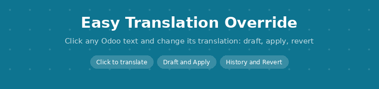
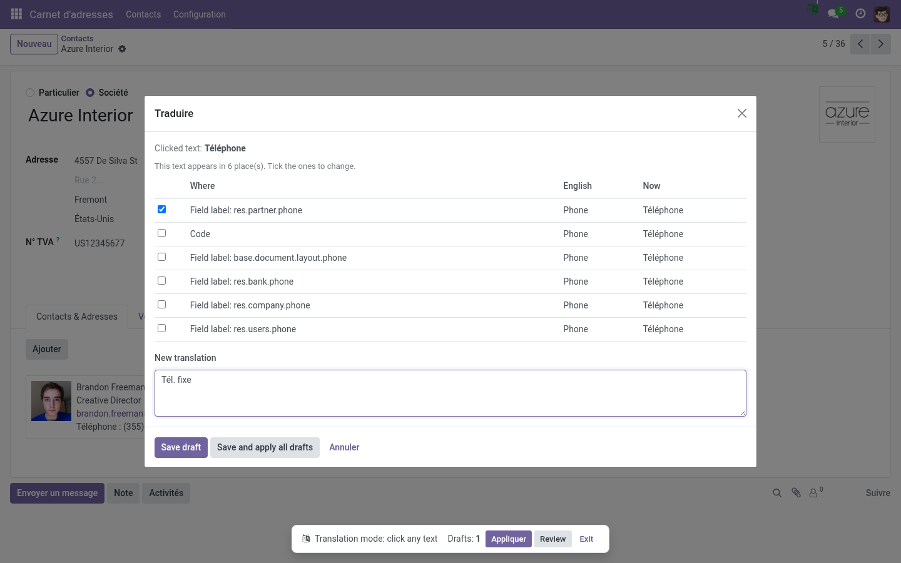
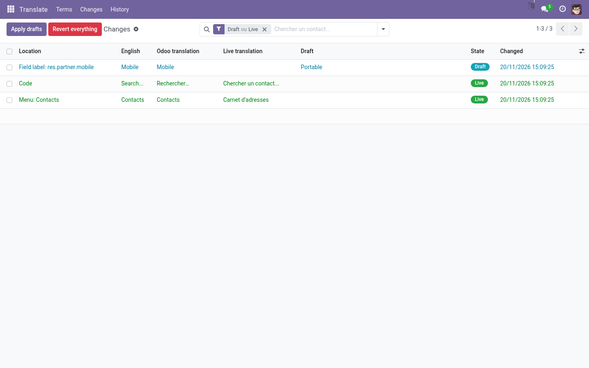
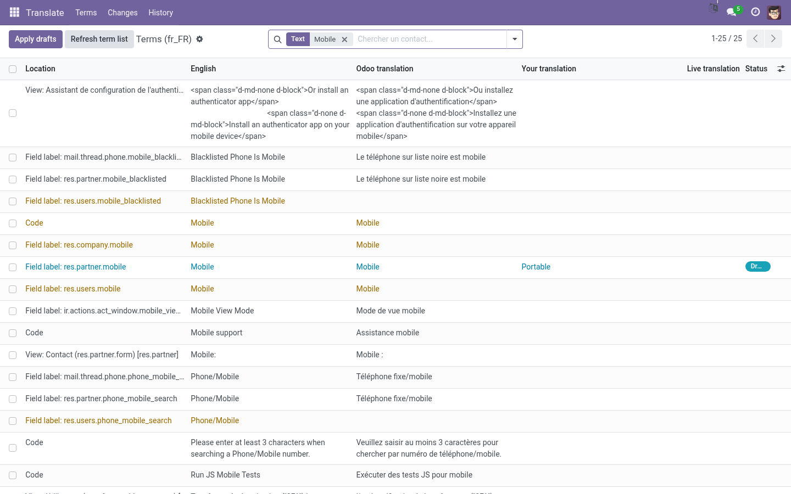

A label says the wrong word? Click it, type the word your team uses, apply. No .po files, no developer, no restart, and every change can be undone.
Odoo 17.0 Community & Enterprise Free · LGPL-3

Translation mode: click the label, see the six places that share it, change only the one you clicked.
Turn on translation mode from the top bar and click any menu, label, button, tab or message.
Python and JavaScript messages, menus, field labels, selection values, view text and action names.
Changes stay drafts until you apply them, so users never see a half-finished wording.
Revert one text, one Apply, or everything back to Odoo's own translation.
Your words come back after module upgrades and language reloads; uninstalling restores Odoo's texts.
Only Translators can change texts, and a translation that drops a placeholder or adds HTML is refused.

Changes: what is live, what is still a draft, and Odoo's own translation next to it.

Terms: every UI text in your language; type in Your translation and apply.
Free and open source (LGPL-3) by Paulius Gaizauskas · Questions or bugs: GitHub issues